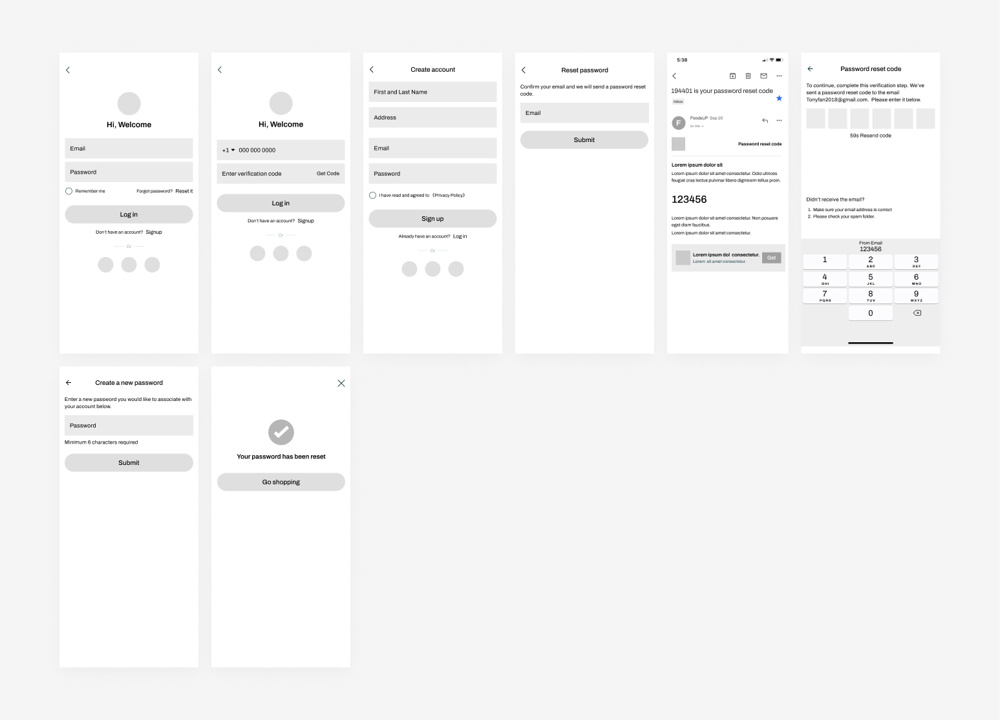
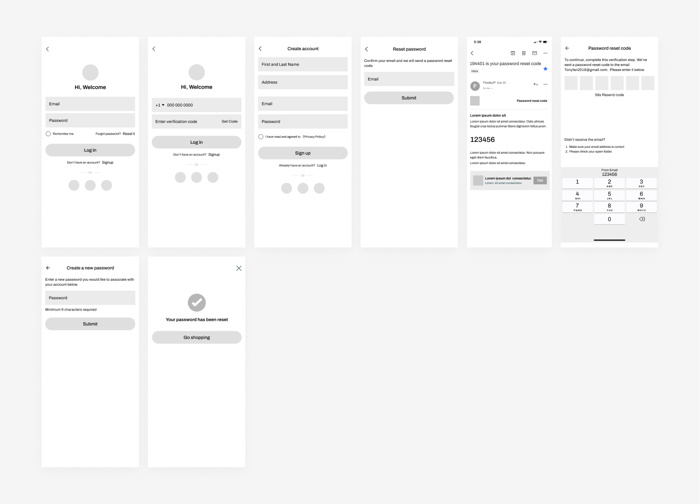

Challenge
Developers and designers struggle with design asset finding and sync issues
As a design lead in our company to transition to Figma as our primary design tool for an actual project, we encountered challenges, where developers and designers offen faced issues with finding design assets and keeping collaboration in sync.
What I Did
Created a Color-code status File Management System
Based on feedback from developers and designers struggling to locate design files for development and design, and product managers' confusion regarding which files are ready for review, I've decided to implement a color-coded status system. Each file will be assigned a different status: red for design, yellow for review-ready, green for development-ready, and blue for prototype. This approach will facilitate quick identification of files for each team member, significantly reducing communication costs and accelerating project development.

 
